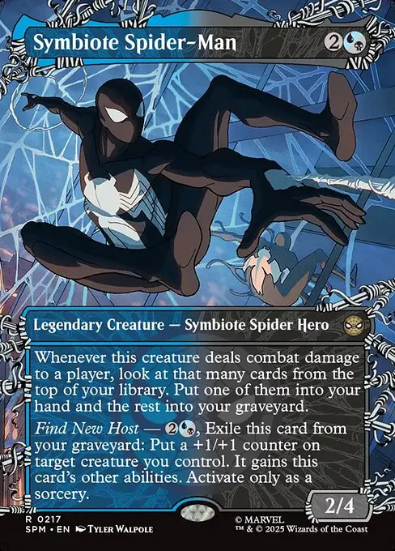
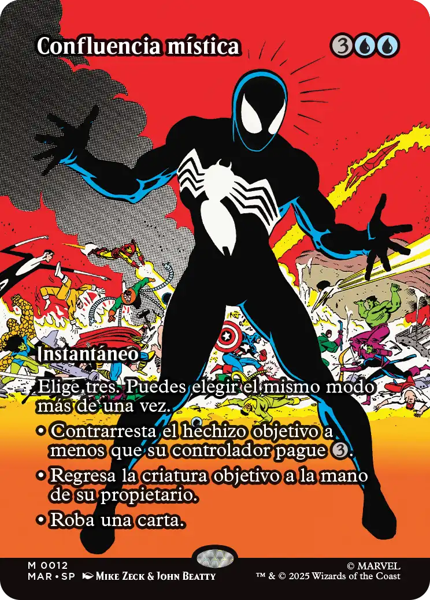
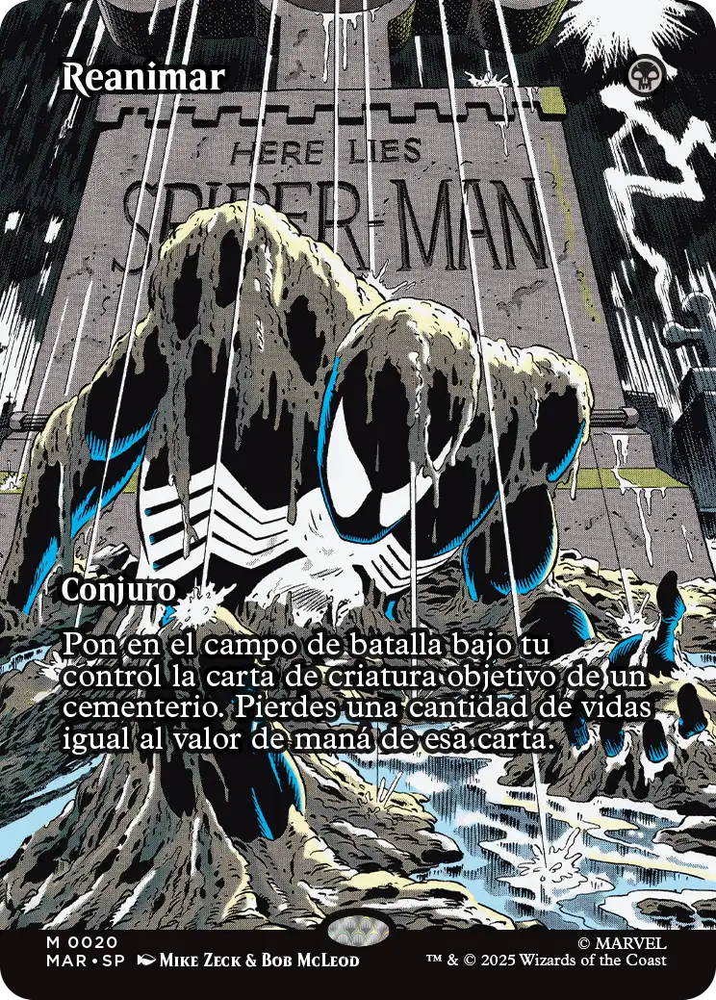
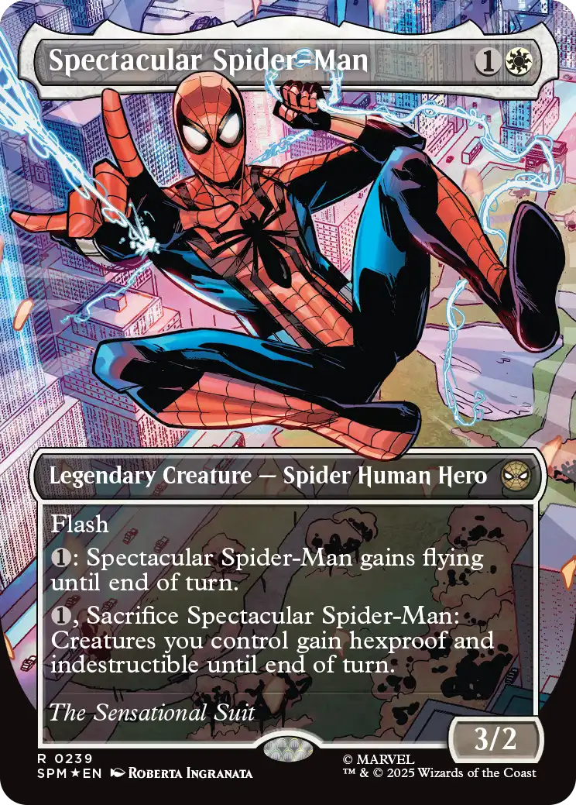
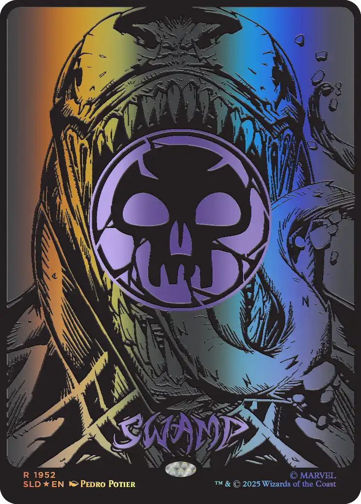
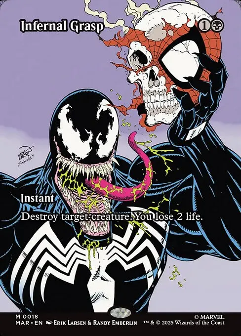

Mis artes favoritos y cartas favoritas
Actualmente en Magic: The Gathering, salio recientemente la nueva edicion completamente de Spider-man, llamada "Marvel's Spiderverso". Esta edicion trae cartas de varios personajes del universo Marvel.
En lo personal, soy un gran fanatico de Spider-man y su universo. Las cartas de esta edición me han impresionado por su arte y mecánicas.
Espero poder construir un mazo tematico de Spider-man el cual ya esta en proceso. El comandante sera Symbiote Spiderman.
Estas son algunas de mis cartas favoritas de esta edición:






